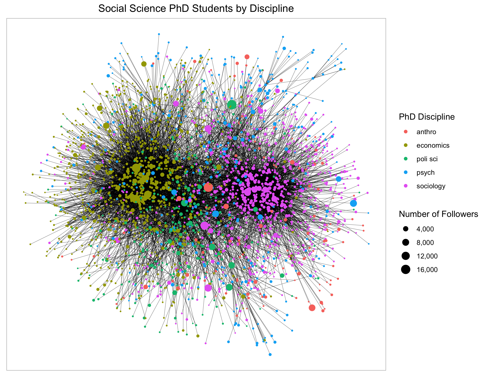

The Twitter API is a great tool for researchers interested in analyzing discourse and social network processes on Twitter. In this post, I introduce a new R package, twittercrawler, which automates the process of collecting social network data through the Twitter API. To use twittercrawler, you will need API credentials. You can apply for these through Twitter’s developer pages developer.twitter.com/en/docs/twitter-api/getting-started/guide.
Currently, you can install the twittercrawler package through my Github page.
The twittercrawler package has one main function: get_user_network. This function requires three parameters. The first parameter, screen_name, is the screen name of the Twitter user you want to collect network data from. The second required parameter, degrees, is the number of “degrees out” you want twittercrawler to go (more on this in a moment). Finally, the token parameter takes the API token returned from api_credentials_to_token.
Let’s go through example to clarify what these parameters mean. Let’s say I want to collect two degrees of network data for myself. I run the following line of code.
This function returns a named list containing two items: a dataframe (nodes) with user information for my Twitter friends and my friends’ friends - in other words, everyone two degrees removed from me on Twitter - and another dataframe (edgelist) indicating ties among these users.
Note that there are over 80,000 users within two degrees of me. This is no surprise. Some of my friends on Twitter have thousands of friends, and all of these friends end up in this dataframe.
In the code below, I limit the user dataframe and edgelist to users who are just one degree away from me. The “degree” column indicates the degrees of separation, so I can simply filter the dataframes to include only nodes that are fewer than 2 degrees away from me.
Why didn’t I just only collect users one degree away from me in the first place? The advantage of collecting users two degrees out and then dropping the 2nd degree users is that the resulting edgelist includes ties among the friends that are one degree removed from me. Let’s look at the resulting network.
My twitter network has one cluster of users that are highly interconnected. Hover over these nodes and you will see that these are data scientists and R programmers. Otherwise, the people I follow on Twitter are sparsely interconnected.
What if I want to conduct a more refined search of a Twitter community? For instance, I may wish to limit my search to data scientists and statisticians. To do this, I use the filter_col and filter_val parameters. filter_col takes the column name of the user dataframe according to which I want to narrow my search. I can use this to limit my search to users whose description field contains a term or set of terms, whose location gives a certain place, or whose followers_count (number of followers) is greater than or less than a certain number. The filter_val parameter is the value(s) according to which I want to filter the results.
To limit my search to data scientists and statisticians, I’ll only include users that mention “data scientist” or “statistician” in their description field. To put this, I enter “description” in the filter_col field and “(data scientist|statistician)” in the filter_val field. Because only a subset of the people I follow on Twitter are data scientists/statisticians, I’ll go three degrees out to collect an adequately large sample.
## # A tibble: 5,360 x 10
## id screen_name name friends_count followers_count location description
## <chr> <chr> <chr> <int> <int> <chr> <chr>
## 1 77861… Andrew_Carr… Andr… 94 104 "Durham… Sociology P…
## 2 14505… minimaxir Max … 401 10379 "San Fr… Data Scient…
## 3 10817… koehrsen_wi… Will… 85 8514 "Illino… Data Scient…
## 4 76965… MariannaFoos Mari… 614 647 "Boston… Former benc…
## 5 92351… R_by_Ryo ⚽️Ry… 593 3667 "Tokyo-… #rstats | M…
## 6 15582‚Ķ kareem_carr üî• Ka‚Ķ 850 64507 "Cambri‚Ķ Statisticia‚Ķ
## 7 29919… rlbarter Rebe… 508 2435 "" Data Scient…
## 8 46646… aschinchon Anto… 671 3438 "Madrid… Maths, gene…
## 9 82171… _RCharlie Char… 433 806 "" Data scient…
## 10 14629… JonTheGeek Jon … 1637 3232 "Austin… Admin of @R…
## # … with 5,350 more rows, and 3 more variables: url <chr>,
## # profile_image_url <chr>, degree <dbl>
The resulting user data is about five thousand rows, meaning that there are about 5500 self-described data scientists/statisticians three degrees away from me on Twitter. Let’s see how the data breaks down by degree.
node_tbl %>% count(degree)
## # A tibble: 4 x 2
## degree n
## <dbl> <int>
## 1 0 1
## 2 1 11
## 3 2 399
## 4 3 4949
I follow 11 data scientists, who follow about 400 data scientists, who follow about 5000 data scientists.
At this point, there are many ways that we could analyze this data. The data include image urls. We could plug users’ images into a neural network that predicts a person’s gender and age from their image, such as Python’s (pyagender module)[https://pypi.org/project/py-agender/]. If we don’t want to bring in neural networks, we could predict gender from the user’s name with R’s (gender package)[https://rdrr.io/cran/gender/f/vignettes/predicting-gender.Rmd].
Instead, I’m going to geocode each user by plugging the text from the location field into the geo function from R (tidygeocoder package)[https://cran.r-project.org/web/packages/tidygeocoder/index.html]. This function takes a string as input and plugs this into a geocoding tool based on the “method” parameter. I’m going to use the OpenStreetMap (osm) geocoder. After dropping users with missing locations from the data, I create a character vector of user locations. Then I run a for loop, and at each iteration I geocode an address and add the coordinates to a list of location coordinates. Finally, I create a new tibble, node_tbl_with_locs, which consists of geolocated users and their geographic coordinates, and remove users for which a location was not found.
## # A tibble: 6 x 2
## location n
## <chr> <int>
## 1 London, England 201
## 2 San Francisco 151
## 3 New York, NY 149
## 4 Washington, DC 82
## 5 Chicago, IL 82
## 6 Seattle, WA 74
The five most common cities among data scientists in my network are London, San Francisco, New York City, Washington DC, and Seattle, in that order. It is a bit surprising that London is the most common city in the data.It is a bit surprising that London is the most common city in the data. This may be a result of my particular network. The ranking of U.S. cities, on the other hand, is exactly what one would expect given the geographic distribution of data science jobs in the United States.
Let’s look more closely at where U.S. data scientists are located in this data.
locations_tbl <- node_tbl_with_locs %>% group_by(lat, long) %>% summarise(location = location, n = n()) %>%
slice(1) %>% ungroup %>% arrange(desc(n))
#### Mapping with rnaturalearth
library("rnaturalearth")
library("rnaturalearthdata")
library("plotly")
world <- ne_countries(scale = "medium", returnclass = "sf")
united_states_tweets <- ggplotly(
ggplot(data = world) +
geom_sf() +
geom_point(locations_tbl,
mapping = aes(long, lat, text = location, size = n), alpha = .2) +
coord_sf(xlim = c(-123, -70), ylim = c(25, 51)) +
labs(color = "", x = "Longitude", y = "Latitude") +
ggtitle("Geographic Distribution of U.S. Data Scientists in My Network") +
theme(plot.title = element_text(hjust = 0.5)), tooltip = c("text")
)
united_states_tweets
This map was created by aggregating users to the location level. The size of the points reflects the number of data scientists in each location. The largest points are in San Francisco, New York, Seattle, Austin, DC, and Chicago. There are some errors in the data. These are a result of ambiguous entries in the location field (e.g., “New Haven by way of Chicago”) and imperfections in osm’s geocoding method. Still, the map gives a sense of where data scientists in my network are located.
To give another example, what if we wanted to collect the network of PhD students in the social sciences on Twitter? This can be done by using the get_user_network function in combination with some regular expression syntax.
# Making vector of social science disciplines
ss_disciplines <- c("sociology|sociology", "economics|economics", "anthropology|anthropology", "political science|political science", "psychology|psychology")
# Turning vector into string with elements separated by "|"
ss_disciplines_str <- paste(ss_disciplines, collapse = "|")
# Discipline name must be included in string that also has "phd student" or "phd candidate
ss_disciplines_str <- paste0("(phd (student|candidate).*", ss_disciplines_str, ".*phd (student|candidate))")
The ss_disciplines_str string will limit the results to users whose description has “phd student” or “phd candidate” as well as one of the disciplines in ss_disciplines. The filter matching feature of get_user_network is not case sensitive, so it does not matter if any of these words are capitalized. Let’s run the get_user_network function and see what we get. I’m going to use myself as the “focal” user and go 4 degrees out.
I have 2,830 social science PhD students in my network (at most four degrees separated from me). What’s the breakdown of these users into the social science disciplines? We can figure this out by some additional string matching on the description field.
Let’s look at the network of users by discipline. Given the large number of users, I’ll refrain from using an interactive plot.
# Converting edgelist and node tibbles to a graph object
graph <- graph_from_data_frame(edgelist_tbl, vertices = node_tbl)
# Creating plot
net2 <- ggraph(graph, layout = 'fr') +
geom_edge_link(width = .1) +
geom_point_interactive(aes(x = x, y = y, size = followers_count, color = factor(group), tooltip = paste0(name, ": ", location))) +
scale_size_continuous(name = "Number of Followers", label = comma, range = c(.1, 5)) +
scale_color_discrete(name = "PhD Discipline") +
ggtitle("Social Science PhD Students by Discipline") +
theme(plot.title = element_text(hjust = 0.5))
# PhD Students Twitter Network
net2

According to the plot, sociology and economics students are highly separated in distinct clusters, while psychology and political science students are more diffusely distributed throughout the network. There are fewer anthropology students than students in the other disciplines. This may reflect that there are fewer anthropology PhD students on Twitter, or it could be a feature of my particular Twitter network. We could adjucicate between these possibilities by rerunning this analysis a few times on a set of randomly selected “focal” users.
Twittercrawler also supports filtering users by multiple conditions. To do this, we enter lists of column names and filter conditions in the filter_col and filter_val parameters. Returning to the data science example, we could limit the search to data scientists located in New York by entering list("description", "location") in the filter_col argument and list("(data scientist|statistician)", "(new york|nyc)") in the filter_val argument. We also need to specify whether include users that match all of the filter conditions or any of the filter conditions. To do this, set the filter_logic argument to “any” or “all”. To collect data scientists in new york, we would set this argument to “all”.
# Getting network of data scientists/statisticians in new york/nyc
user_content <- get_user_network(id = "778619636510326784",
degree = 5,
token = api_token,
track_progress = TRUE,
filter_col = list("description", "location"),
filter_val = list("(data scientist|statistician)", "(new york|nyc)"),
filter_logic = "all")
# Storing results as node and edgelist tibbles
node_tbl <- user_content[[1]]
edgelist_tbl <- user_content[[2]]
# Converting edgelist and node tibbles to a graph object
graph <- graph_from_data_frame(edgelist_tbl, vertices = node_tbl)
# Creating plot
net3 <- ggraph(graph, layout = 'fr') +
geom_edge_link(width = .1) +
geom_point_interactive(aes(x = x, y = y, size = followers_count, color = factor(degree), tooltip = paste0(name, ": ", location))) +
scale_size_continuous(name = "Number of Followers", label = comma, range = c(1, 5)) +
scale_color_discrete(name = "Degree") +
ggtitle("Data Scientists in NYC") +
theme(plot.title = element_text(hjust = 0.5))